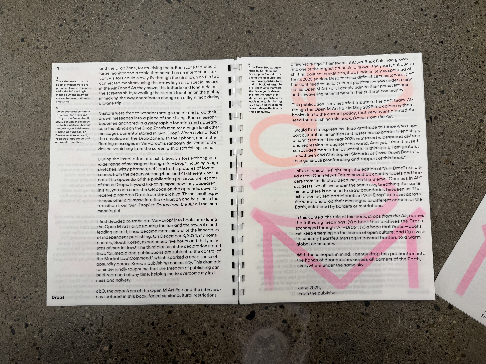

After many visitors dropped their messages and drawings into Air-Drop during the 2025 Open M Art Fair hosted by abC (art book in China), countless messages have been floating in the air of Air-Drop. The messages they exchanged include rough sketches, witty phrases, self-portraits, pictures of lovers, scenes capturing the beauty of Hangzhou, and even 41 different kinds of cats.
This page allows you to encounter one of the Drops stored in Air-Drop. If you would like to receive another Drop, please press the Drop button at the bottom right. A new random Drop will appear. If you like it, you can press the Down button at the bottom left to download the image.
During the exhibition, participants crossed borders in the air of Air-Drop, leaving their messages behind. The Location displayed at the top of the screen shows the latitude and longitude of where each message was dropped. Now, the messages once released across the world travel beyond borders once again to reach you. We all live under the same sky, and there is no need to draw boundaries between us.
The book Drops from the Air expresses deep gratitude to those who support cultural communities and nurture friendships among creators across borders.
Interview – Team abC: Yue Zhou, Dan Yang, Yaya Liu
Special Thanks – Draw Down Books: Kathleen Sleboda, Christopher Sleboda
Published by Halim Lee – leehalim.com @alim.db
© 2025 Halim Lee, the interviewers, and the participants